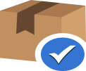

<div class="container-fluid bg-light my-5 py-6">
    <div class="container servicesButtonsHover">
        <div class="section-header text-center mx-auto mb-5 wow fadeInUp" data-wow-delay="0.1s" style="max-width: 500px;">
            <h1 class="display-5 mb-3">Our services</h1>
        </div>
        <div class="row g-4">
            <div class="col-lg-4 col-md-6 wow fadeInUp" data-wow-delay="0.1s">
                <div class="bg-white text-center h-100 p-4 p-xl-5">
                    
                    <h4 class="mb-3">Moving</h4>
                    <p class="mb-4">With its long experience, highly qualified personnel, the necessary specialized specialized transport equipment, equipment and materials, Tetrahedron-49 Ltd. offers dismantling, transport positioning and installation of safes and heavy banking equipment. We guarantee that you retain the integrity of your property.</p>
                    <a class="btn btn-outline-info border-2 py-2 px-4 rounded-pill" onClick="return openModal();">Inquiry</a>
                </div>
            </div>
            <div class="col-lg-4 col-md-6 wow fadeInUp" data-wow-delay="0.3s">
                <div class="bg-white text-center h-100 p-4 p-xl-5">
                    
                    <h4 class="mb-3">Installation</h4>
                    <p class="mb-4">Installation of a safe must be carried out by highly qualified persons who are perfectly aware of the risks that may occur when making an error while moving and positioning the safe to the installation site. For safes up to 700kg. it is desirable to have a preliminary inspection by a company representative and for safes over 700kg. our view is that this view is mandatory. This will avoid unpleasant surprises such as: incorrect size of the safe, presence of stairs, obstacles, etc. This will lead to additional shipping costs. We have to inform you that when it comes to a product like a safe, its relocation, positioning and installation have a higher value than most other goods.</p>
                    <a class="btn btn-outline-info border-2 py-2 px-4 rounded-pill" onClick="return openModal();">Inquiry</a>
                </div>
            </div>
            <div class="col-lg-4 col-md-6 wow fadeInUp" data-wow-delay="0.5s">
                <div class="bg-white text-center h-100 p-4 p-xl-5">
                    
                    <h4 class="mb-3">Delivery</h4>
                    <p class="mb-4">The transport of safes requires the use of specialized transport equipment equipped with the necessary facilities. “Tetraedar-49” Ltd. offers the delivery of your safes exactly with such transport means, guaranteeing reliable delivery and safe unloading of your purchased safe to your home.</p>
                    <a class="btn btn-outline-info border-2 py-2 px-4 rounded-pill" onClick="return openModal();">Inquiry</a>
                </div>
            </div>
        </div>
    </div>
</div>